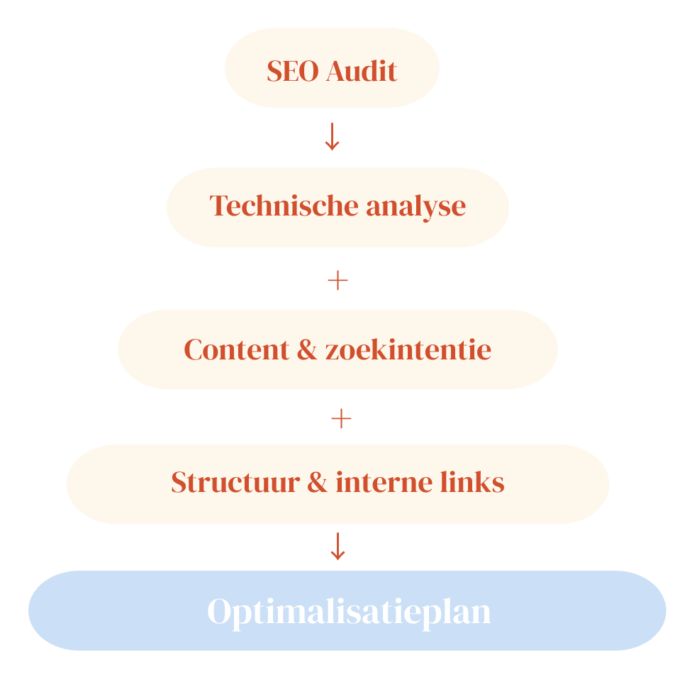
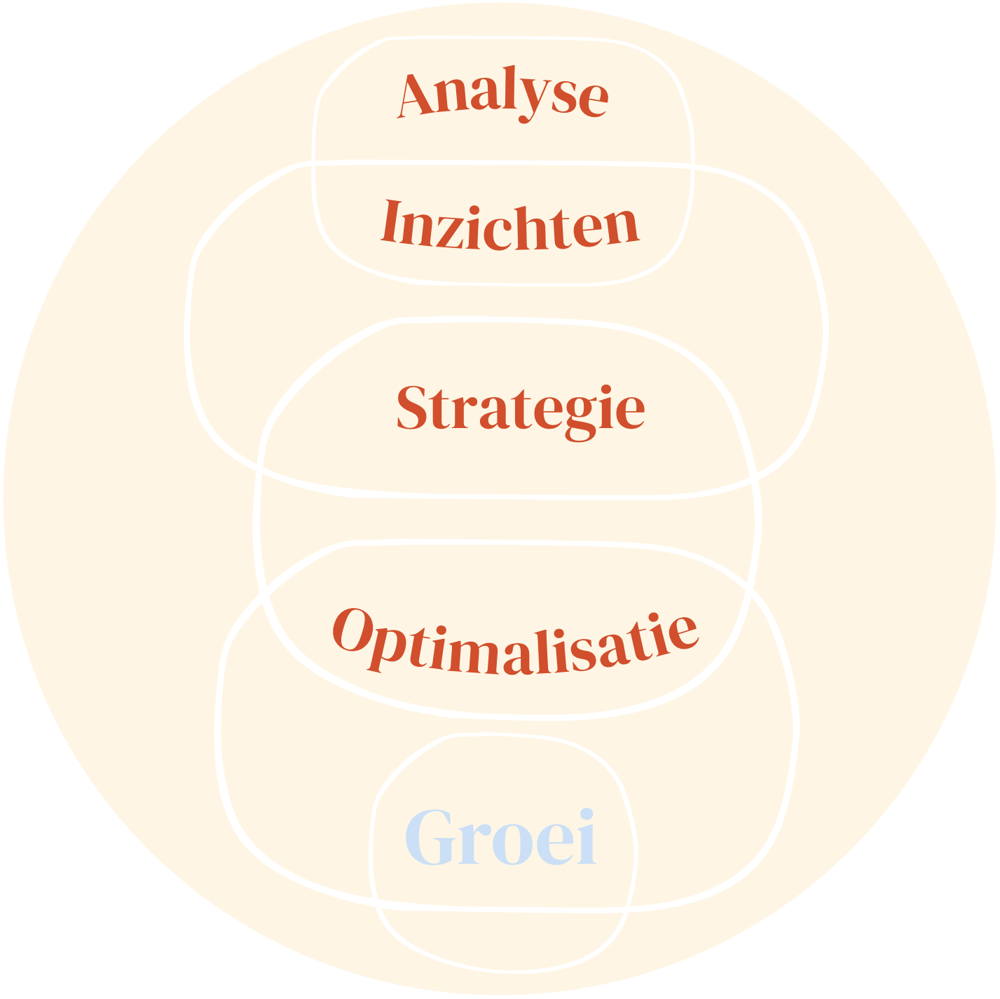
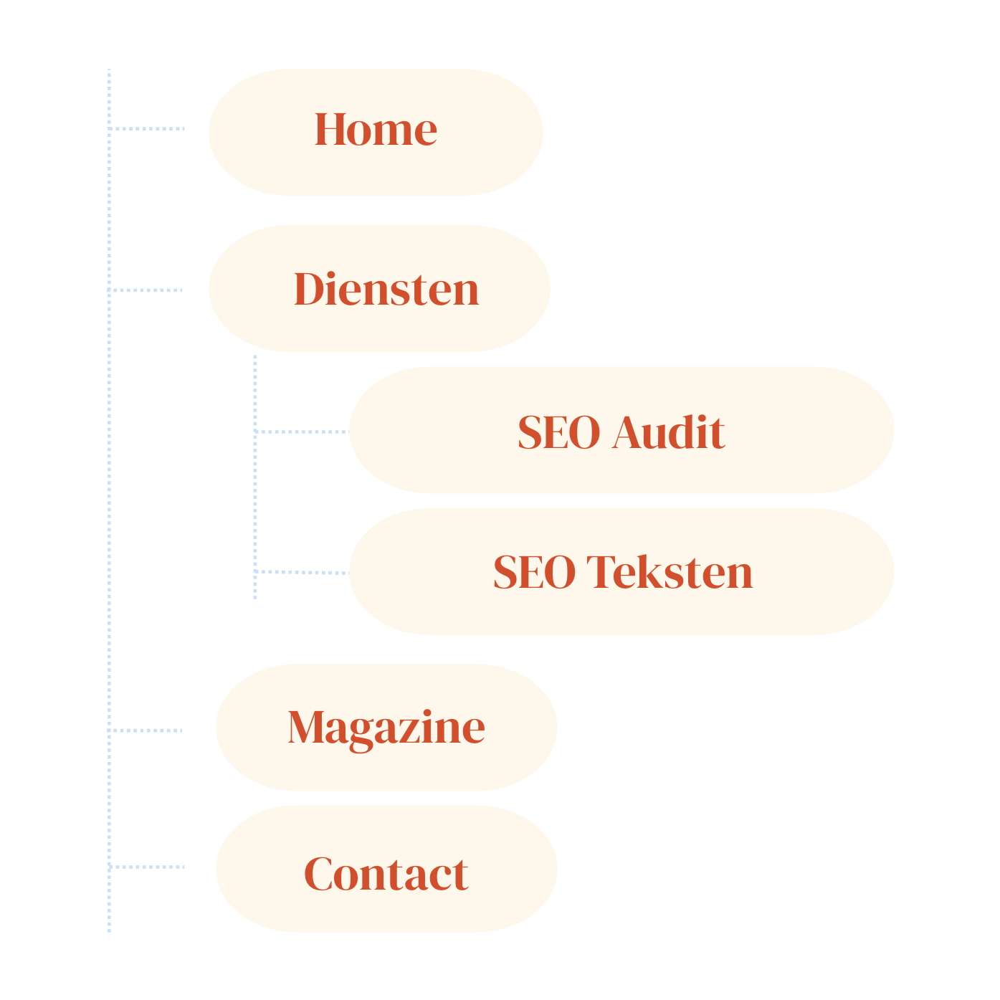

Aan de basis van een goed vindbare website, een groeiend bezoekersaantal en betekenisvolle conversie staat de SEO audit. Nog vóór het zoekwoordenonderzoek, het schrijven van teksten of optimalisaties plaatsvinden, brengt een audit in kaart waar een website nu staat en waar ruimte ligt voor verbetering.
Een SEO audit vormt daarmee het fundament van iedere duurzame SEO-strategie. Het is het proces waarin structuur, techniek en inhoud samenkomen en waarin duidelijk wordt wat een website nodig heeft om op een natuurlijke manier te kunnen groeien.
Als freelance SEO specialist begin ik vrijwel ieder traject met een SEO audit. In deze fase kijk ik aandachtig naar een website, met oog voor detail en voor het verhaal achter het bedrijf.
Op deze pagina neem ik je mee in hoe zo'n audit eruitziet: welke onderdelen ik analyseer, welke vragen daarbij centraal staan en hoe de inzichten uit een audit uiteindelijk worden vertaald naar gerichte verbeteringen.
Op zoek naar hulp bij de SEO van jouw website? Stuur mij vrijblijvend een berichtje via onderstaande knop of via mijn gegeves op de pagina contact. Ik kijk ernaar uit om van je te horen! 🌷

Een SEO audit is een diepgaande analyse van de technische basis van een website, alles wat er op de website te vinden is (on-page SEO), en wat er over de website verschijnt op andere websites en platforms (off-page SEO).
Het doel van een SEO audit is om helder te krijgen wat er goed gaat en waar ruimte ligt voor verbetering. Op basis van deze inzichten kan een gerichte SEO-strategie worden opgesteld voor de optimalisatie van een site. Daarbij staat zowel de vindbaarheid in zoekmachines centraal, alsook de ervaring van de menselijke gebruiker.
Een website die is geoptimaliseerd naar aanleiding van een SEO audit werkt prettiger en sneller, voelt overzichtelijker aan en communiceert duidelijker. Dit versterkt niet alleen de positie in zoekresultaten, maar ook het vertrouwen van bezoekers.
Bij elk onderdeel van een SEO-audit horen specifieke vragen. Vragen die inzicht geven in wat een website nodig heeft om beter gevonden te worden én prettiger te werken voor de gebruiker. Wanneer dit helder is, ontstaat er vanzelf richting voor verdere optimalisatie. Hieronder neem ik je per onderdeel mee in de vragen die tijdens een SEO-audit centraal staan.
Tijdens de analyse van de technische SEO wordt onder andere gekeken naar de laadsnelheid van de website, de werking op mobiele apparaten en eventuele technische problemen die de gebruiksvriendelijkheid of indexatie in zoekmachines kunnen belemmeren.
Ook wordt onderzocht of zoekmachines de website goed kunnen crawlen en begrijpen, en of de technische structuur de inhoud voldoende ondersteunt.
Voor de on-page SEO wordt geëvalueerd hoe kwalitatief en relevant bestaande teksten zijn of. Indien content nog ontbreekt, wordt gekeken naar het doel, de doelgroep en de gewenste toon van de website. Deze inzichten vormen later de basis voor nieuwe of aangescherpte teksten.
Naast de teksten die op de website zelf zichtbaar zijn, worden ook de metatitels en -omschrijvingen onder de loep genomen. Dit zijn de tekstjes die je in de zoekresultaten van Google ziet en die zoekmachines helpen begrijpen waar een pagina over gaat. Daarnaast wordt gekeken naar interne links en eventuele schema markup, om de onderlinge samenhang en structuur van de website te versterken.
Bij de analyse van de off-page SEO wordt onderzocht in hoeverre andere websites naar jouw website verwijzen en wat de kwaliteit van deze backlinks is. Niet alleen het aantal links speelt hierbij een rol, maar vooral de betrouwbaarheid, relevantie en context van de websites waar deze verwijzingen vandaan komen.
Backlinks fungeren voor zoekmachines als signalen van vertrouwen. Een link vanaf een inhoudelijk sterke en passende website weegt zwaarder dan meerdere links van lage kwaliteit. Tijdens de SEO audit wordt daarom gekeken of deze externe signalen jouw website ondersteunen, of juist afremmen, en waar mogelijkheden liggen om de online autoriteit op een natuurlijke manier te laten groeien.

Eerder schreef ik over de vragen die bij elk onderdeel van de SEO audit leidend zijn. In dit hoofdstuk laat ik zien wat er gebeurt zodra die antwoorden er zijn. Een audit is namelijk geen eindpunt, maar het begin van het vormen van een richting voor de optimalisatie. Hier vertaal ik bevindingen naar keuzes en concrete vervolgstappen.
Tijdens de SEO audit breng ik eerst de technische basis van de website in kaart. Ik kijk of zoekmachines de website goed kunnen bereiken, begrijpen en indexeren, en of de techniek de inhoud ondersteunt zoals bedoeld.
Wanneer ik technische knelpunten tegenkom, onderzoek ik wat deze betekenen voor zowel zoekmachines als bezoekers. Denk aan pagina’s die niet goed geïndexeerd worden, trage laadtijden of een structuur die onnodig complex is. Zulke bevindingen vormen geen eindpunt, maar een vertrekpunt.
Op basis daarvan bepaal ik welke technische aanpassingen nodig zijn om de website weer in beweging te brengen. Soms betekent dit het oplossen van concrete fouten, soms het vereenvoudigen van de structuur of het aanscherpen van instellingen die op de achtergrond een grote rol spelen.
Het doel is altijd om een technische basis te creëren die rust geeft, meewerkt en ruimte laat voor verdere optimalisatie. Wanneer de techniek klopt, krijgen content en structuur de kans om echt tot hun recht te komen.
Misschien heb je al teksten voor je website geschreven of zelfs al geïnvesteerd in het laten schrijven van SEO teksten. Tijdens de audit onderzoek ik welke pagina’s aansluiten bij een duidelijke zoekintentie en welke pagina’s die verbinding nog missen.
Er hoeven niet altijd nieuwe teksten te worden toegevoegd. Soms is het herschrijven of aanvullen van bestaande content voldoende. Het belangrijkste is dat de teksten die er zijn jouw missie en de ziel van je bedrijf op een natuurlijke manier weerspiegelen, én dat ze SEO-technisch sterk in elkaar steken. Wanneer dit niet het geval blijkt, stel ik een gericht plan op om de aanwezige content te versterken.
Wanneer een website nog geen content heeft of wanneer er belangrijke onderdelen ontbreken, werk ik een voorstel uit voor teksten die logisch kunnen worden toegevoegd. Kies je er vervolgens voor om ook je SEO teksten door mij te laten schrijven, dan zijn deze altijd afgestemd op wat ik tijdens de audit over jouw bedrijf, doelgroep en positionering te weten kom. Vaak gaat hier ook een persoonlijk gesprek aan vooraf, waarin ik de ruimte neem om jouw verhaal echt te leren kennen.
Zo ontstaat content die niet alleen gevonden wordt, maar ook voelt als een vanzelfsprekende verlenging van jouw merk.

Elke pagina op een website vertelt idealiter een deel van hetzelfde verhaal. Samen vormen deze pagina’s een geheel dat richting geeft, vertrouwen wekt en uitnodigt om verder te lezen. Om die samenhang ook technisch helder te maken, wordt gewerkt met interne links: verwijzingen die pagina’s met elkaar verbinden.
Daarnaast speelt ook de relatie met de buitenwereld een rol. Externe links laten zien waar jouw website zich inhoudelijk toe verhoudt, terwijl backlinks aangeven hoe andere websites jou weten te vinden en waarderen.
Wanneer ik tijdens de audit ontdek dat interne links ontbreken of niet logisch zijn opgebouwd, breng ik opnieuw structuur aan. Ik kijk welke pagina’s leidend zouden moeten zijn, welke ondersteunen en hoe bezoekers én zoekmachines op een natuurlijke manier door de website kunnen bewegen.
Zie ik dat externe links verwijzen naar irrelevante of minder sterke pagina’s op andere websites, dan onderzoek ik hoe deze beter kunnen aansluiten bij de kern van jouw website. Hetzelfde geldt voor backlinks die verwijzen naar verouderde of minder passende pagina’s binnen je eigen site. Soms vraagt dit om het versterken van bestaande pagina’s, soms om het verleggen van de focus naar pagina’s die beter aansluiten bij de huidige richting.
Ook wanneer backlinks gebroken zijn, van lage kwaliteit blijken of de autoriteit van jouw website eerder afremmen dan versterken, neem ik dit mee in mijn advies. Ik maak inzichtelijk welke links geen waarde toevoegen en waar juist kansen liggen om de online autoriteit op een natuurlijke, duurzame manier te versterken.
Door interne structuur en externe signalen bewust op elkaar af te stemmen, ontstaat er rust en helderheid. De website krijgt een duidelijke kern waarin alles dezelfde richting op werkt en dat vormt een stevige basis voor verdere groei.
In de basis kan elke website baat hebben bij een SEO audit. Ongeacht of je net gestart bent of al jaren online zichtbaar bent. Websites zijn namelijk nooit écht af: ze groeien, veranderen en bewegen mee met jouw bedrijf en met hoe mensen zoeken.
Toch zijn er een aantal situaties waarin zo'n audit extra waardevol is:
Een SEO audit brengt in de eerste plaats helderheid, richting en rust. Door alle belangrijke onderdelen van een website te analyseren – van technische SEO tot on-page en off-page factoren – wordt zichtbaar waar je website nu staat en waar de grootste kansen liggen voor verbetering. Zonder zo’n totaalbeeld blijft het vaak gissen waarom een website minder goed presteert dan gehoopt.
Verschillende onderdelen van SEO beïnvloeden elkaar voortdurend. Wanneer je alleen losse optimalisaties doorvoert, blijft de onderliggende samenhang soms onzichtbaar. Een SEO audit brengt die samenhang juist wel in kaart. De inzichten die uit de analyse voortkomen, vormen de basis voor gerichte verbeteringen: van technische aanpassingen en sterkere content tot een duidelijkere structuur binnen de website.
Wanneer deze inzichten worden vertaald naar concrete optimalisaties, groeit een website stap voor stap uit tot een sterker geheel. Zoekmachines kunnen de inhoud beter begrijpen, bezoekers vinden sneller wat ze zoeken en de kans neemt toe dat zij uiteindelijk klant worden. Zo vormt een SEO audit niet alleen een moment van analyse, maar vooral een fundament voor duurzame online groei.
Ben je benieuwd wat er onder de oppervlakte van jouw website gebeurt en waar nog ruimte ligt voor verbetering? Dan kan een SEO audit een waardevol vertrekpunt zijn.
Je kunt mij altijd vrijblijvend een berichtje sturen om de mogelijkheden te bespreken. Klik hieronder op de knop of bekijk mijn gegevens op de pagina contact.
Het zou me een genoegen zijn je te mogen helpen om online nog beter vindbaar te worden!